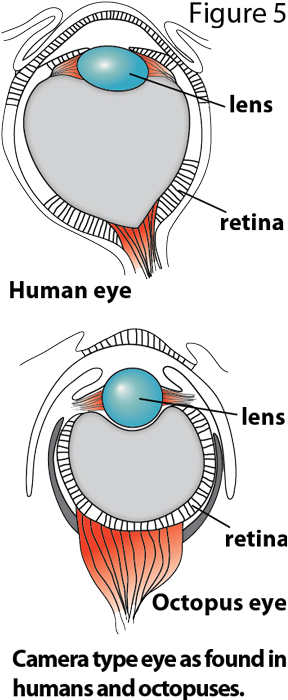

Cephalopods lack the visual blind spot that impairs the mammalian clade; is it possible that the mammalian eye
will eventually be redesigned by natural selection to resemble that superior eye of the cephalopod? It isn't likely.
One evolutionary biologist remarked that natural selection is not an inventor but a tinkerer, working with what has
already been built to improve functionality. For this reason, there would need to be intermediate adaptations to the
mammalian eye to access the superior cephalopod eye. For as long as these intermediate changes are not adaptive, the
mammalian eye will not develop into that of the cephalopod.
